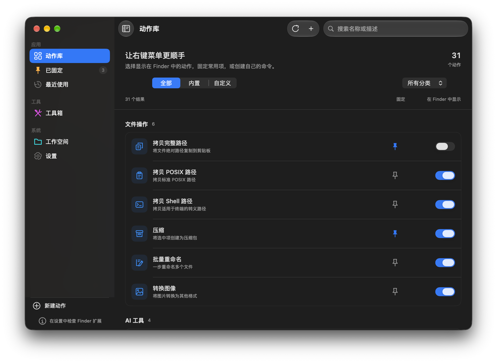

让 Mac 右键，
更懂你的工作。
在 Finder 里批量重命名、压缩、新建文件和转换图片。用自定义动作整理自己的右键菜单，跟着向导一步步确认能用。

常用操作，
留在右键里。
采用 SwiftUI、AppKit 与 Finder Sync。文件工具、本地图片处理和可选的远程 AI，都可以从动作库管理。
- 本地文字识别与抠图：通过 Apple Vision 在 Mac 上处理，使用这两项功能无需上传到云端。
- 可选的 AI 命名与标签：配置 OpenAI 兼容服务、智谱、Moonshot 或本地 Ollama。远程功能会把相关文本发送到所选服务商，可能产生费用。
- 自己的右键动作：创建、编辑 Shell、AppleScript 或打开应用动作，设置图标、文件类型及选择数量条件。

把重复操作，变成顺手一步。
按需要显示和隐藏动作，把常用功能固定下来。
批量重命名
添加前缀、后缀或编号。执行前预览新名称，检查重名和路径冲突。
ZIP 压缩
压缩选中的文件与文件夹，显示处理进度。已有输出保留，新输出使用独立文件名。
图片格式转换
导出 PNG、JPEG、TIFF 或 HEIC，保留原图，准确显示部分成功和失败结果。
18 种新建模板
在当前目录创建 TXT、Markdown、Word、Excel、PowerPoint 以及常用代码和配置文件。
终端与路径
在当前目录打开 Apple Terminal，或复制完整路径、POSIX 路径和经过 Shell 转义的路径。
自定义菜单动作
编辑名称、图标、脚本和文件条件；取消编辑保留原配置，保存失败时留下草稿供重试。
安装后，按步骤确认可用。
- 下载 DMG，打开后将 SuperRClick.app 拖入“应用程序”。
- 启动应用，跟随“使用向导”。点击“打开扩展设置”，在“系统设置 → 通用 → 登录项与扩展 → Finder”中启用 Super RClick。
- 进入个人文件夹中的可写目录，在空白处右键找到 Super RClick，尝试新建 TXT 文件。成功后回向导确认。
- 在动作库调整菜单显隐、固定常用动作，或创建自己的脚本动作。以后可从“设置 → 打开向导中心”重新检查。
0.3.0-beta.1 · 社区预览版 · 2026 年 10 月 24 日
包含新版原生动作库、原创图标、文件安全与兼容性修复，以及实际操作验证步骤。安装包采用本地临时签名，尚无 Developer ID 分发签名与 Apple 公证。系统可能拦截网络下载的应用；确认信任来源后，可使用“隐私与安全性”中针对该应用的“仍要打开”，请勿关闭全局安全保护。
构建目标为 macOS 15+，包含 Apple Silicon 和 Intel 二进制。目前本机验证环境为 macOS 27 / Apple Silicon；macOS 15、Intel 真机、真实 Finder 菜单及桌面手势仍需更多设备验证。查看发布说明与验证边界。
右键前，你可能想知道。
安装后为什么看不到菜单？
先把应用放进“应用程序”并启动一次，再通过向导启用 Finder 扩展。当前版本监控个人文件夹及其子目录，外接硬盘和其他系统目录尚不在该范围内。
桌面空白处也支持吗？
桌面增强是可选功能：保持主应用运行，在桌面空白处使用 Option + 右键。这需要单独授权“辅助功能”和“输入监控”；普通 Finder 菜单无需这两项授权。
可以完全自定义哪些内容？
可以控制动作显隐、固定常用项，以及创建和编辑自定义 Shell、AppleScript 或打开应用动作，设置文件类型与选择数量条件。本预览版尚不支持任意拖拽排序和自由配置全盘监控范围，也不会授予全磁盘访问权限。
AI 会把我的文件上传吗？
本地 OCR 和抠图使用 Apple Vision，不依赖云端。可选的远程 AI 命名和标签会把文件文本或识别出的文字发送到你配置的服务商；费用与数据处理以该服务商为准。
是否收费？什么时候上架 Mac App Store？
GitHub 下载免费，源码采用 MIT 许可。目前发布渠道是 GitHub 预览版，尚未提交 Mac App Store，暂无确定的商店上架日期。
是否支持正则重命名或 WebP 导出？
目前批量重命名支持前缀、后缀和可选编号；图片导出支持 PNG、JPEG、TIFF、HEIC。正则替换和 WebP 导出尚未实现。